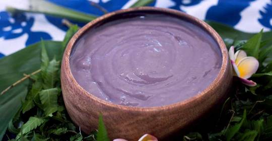

Poi Recipe

Poi is a traditional staple food in the Polynesian and Hawaiian diet. It is made from the root
bulb of taro plants which is then mashed with water and allowed to ferment.
Prep Time: 10 mins
Cook Time: 50 mins
Ingredients:
- 1 lb taro root, scrubbed clean, peeled and cut into 2 inch chunks
- 1/2 cup water
Steps
- Place taro root chunks in a steamer basket over a pot of boiling water. Steam taro until
fork soft (about 20-25 minutes)
- Transfer taro into a s mortar and pound with a pestle for about 20 minutes until all
the fibres and lumps are gone, and the consistency is a nice and smooth paste
- Continue mashing as you pour a little water at a time until you get the desired consistency and enjoy
- Optional: Do not refrigerate if you want to ferment. Place poi in a non-reactive bowl and
and place a kitchen towel over it. Good option for probiotics
Note: Poi is served in a big communal bowl, but can also be served in individual bowls
as well to accompany kalua pork, grilled huli huli chicken, and Hawaiian macaroni salad.